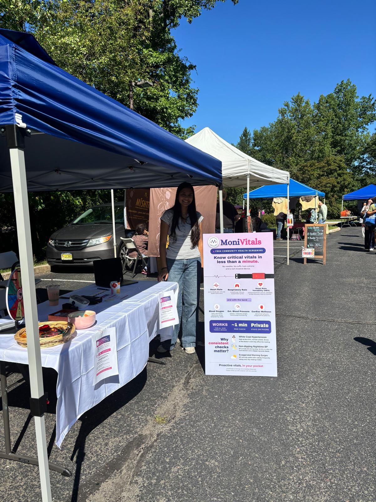
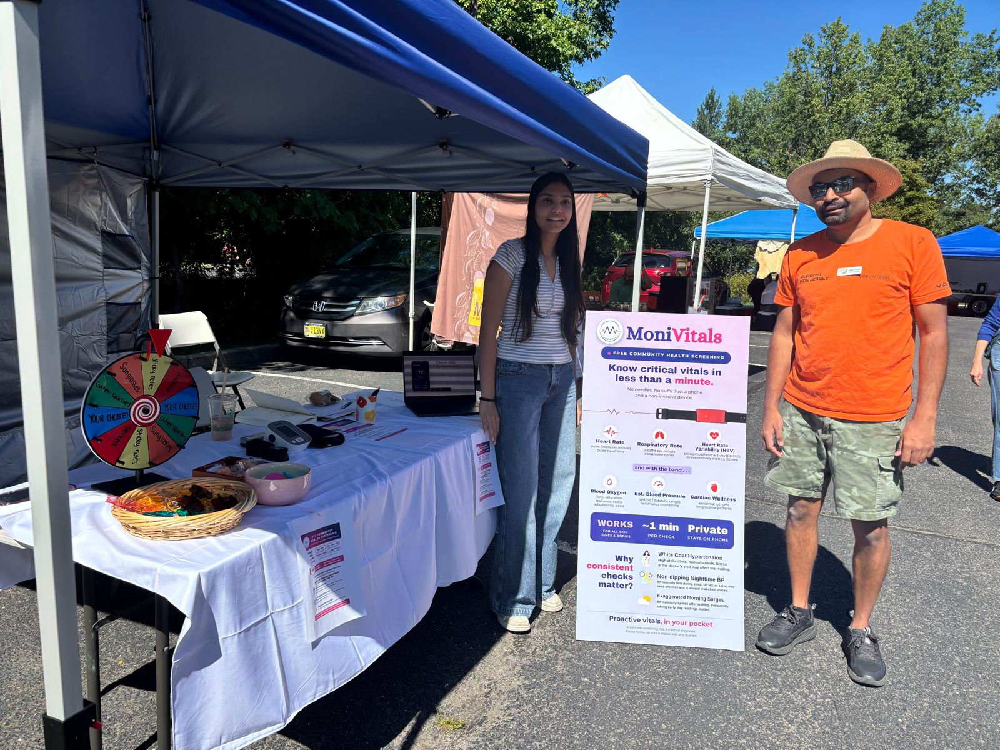
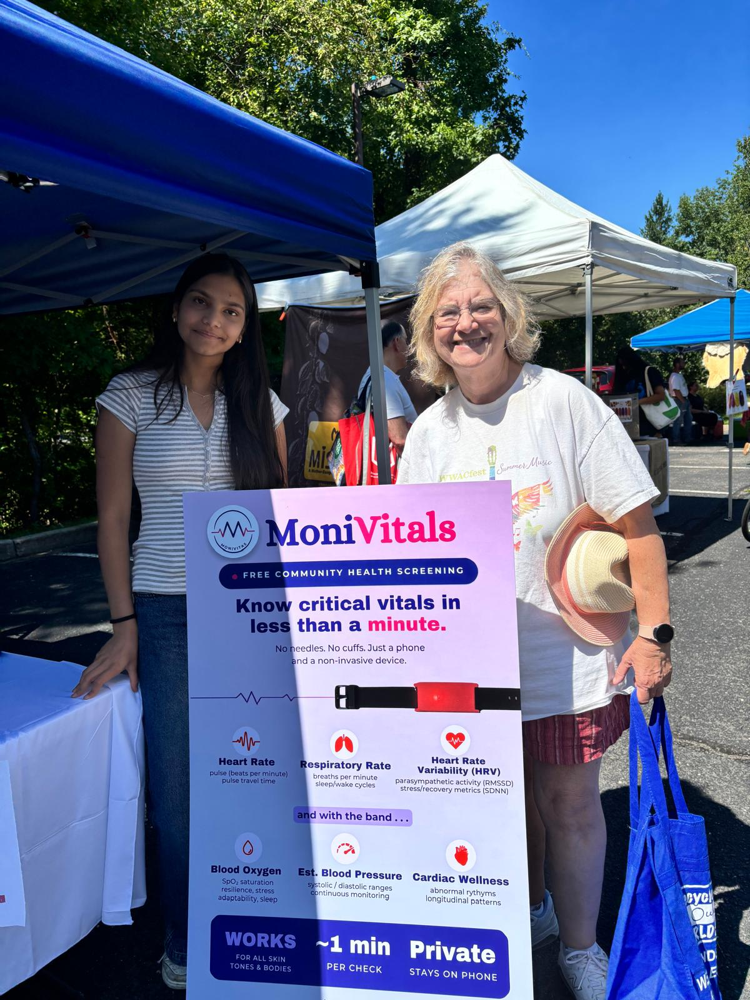
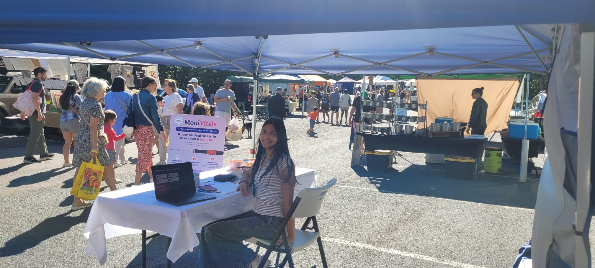
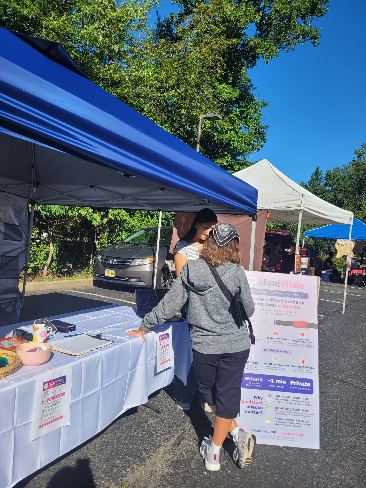

High-Velocity Robotic Control, Hardware & Telehealth
Combining rigorous PID control theory, custom hardware fabrication, embedded telemetry, and accessible digital triage to solve complex mechanical and human challenges.
FIRST Robotics Tournaments • WPI World Open #14 in the World
Lead Autonomous Programmer driving motion planning, sensor-fused odometry, and precision attachment design across state, regional, and world championships.
Autonomous Engineering & Pit Excellence
Over four seasons of competitive robotics, Aadya led autonomous algorithm design utilizing optical encoders and gyro sensors. At the WPI FLL US Open World Championship in June 2024, her team was ranked #14 in the World out of 108 international teams, earning recognition as a Robot Design Award Finalist.
- ✓ WPI US Open World: Finalist, Robot Design Award (Worcester, MA, June 2024)
- ✓ NJ State Championship: Breakthrough Award (2023-2024)
- ✓ NJ Regionals: 1st Place Robot Design Award (2023-2024 & 2022-2023)
- ✓ FTC BioBuzz: Autonomous control algorithms & FTC telemetry pipelines
Ranked 14th out of 108 international championship teams at WPI World Open.
Zero manual interventions required on primary 2.5-minute mission runs.
 +
+
Aadya with Competition Robot
Custom-built robot featuring high-torque dual motors and optical odometry.
 +
+
Robot Design Award • NJ Regionals
1st Place Robot Design Award recognized for modular mechanical architecture.
 +
+
Breakthrough Award • NJ State
State Championship Breakthrough Award for sensor integration.
 +
+
Robot Design Award (2022-2023)
Early robotics season milestone earning regional Robot Design honors.
 +
+
Championship Team Delegation
Team award recognition at the State Robotics Championship.
 +
+
Technical Engineering Poster
Comprehensive poster illustrating autonomous trajectories and gear ratios.
 +
+
Tournament Pit Setup
Interactive pit display explaining robot telemetry to judges and visitors.
 +
+
Autonomous Mission Execution
Precision mission deployment on the competition playing field.
 +
+
WPI FLL US Open World Team
International championship delegation at Worcester Polytechnic Institute.
 +
+
World Finalist • Robot Design
Accepting Robot Design Award Finalist honor among 108 world teams.
 +
+
WPI International Pit & Visitors
Sharing code architecture with teams from over 40 countries.
 +
+
Field Table Precision Scoring
Consistent scoring alignment on complex mission objectives.
MoniVitals.com • Live Community Telemetry Testing
Remote vital signs monitoring platform tested live with seniors and community members at the local Farmers Market, providing instant telemetry triage.
Real-World Field Testing & Patient Engagement
MoniVitals bridges the gap between complex hospital telemetry and accessible community care. Aadya brought the functioning hardware station to the local community Farmers Market, conducting live vital signs assessments (pulse, SpO2, blood pressure) for dozens of residents, verifying clinical triage algorithms in uncontrolled ambient conditions.
The system features automated risk stratification: readings are categorized into green, amber, and red alert tiers, notifying designated caregivers through SMS when anomalous patterns are detected.
- ▸ Multi-Sensor Fusion: Photoplethysmography & optical SpO2 probes
- ▸ Live Community Kiosk: 50+ residents tested in field deployment
- ▸ Threshold Alert Pipeline: Immediate caregiver SMS dispatch
- ▸ Zero-Barrier Interface: Large touch typography designed for seniors
 +
+
Live Demonstration Station
Aadya Agarwal presenting MoniVitals at the community demonstration kiosk.

+Interactive Clinical Triage
Demonstrating vital signs monitoring to community members.

+Telemetry Dashboard Review
Analyzing real-time sensor streams and automated triage thresholds.

+Senior Citizen Health Monitoring
Testing non-invasive pulse and oxygen telemetry with senior residents.

+Health Kiosk Consultation
Explaining clinical telemetry architecture and alert pipelines.

+System Architecture Walkthrough
Demonstrating cloud data transmission to local healthcare advocates.
MIT Solve Top 5 National Winner • Biochar IoT Buoy & Ocean Remediation
Porous matrix filtration buoy combining solar-powered telemetry with activated biochar for real-time pH restoration and marine heavy metal absorption.
 +
+
Continuous Flow Filtration Blueprint
CAD schematic of multi-depth water routing and activated biochar chambers.
 +
+
Engineered Biochar Samples
Comparative pyrolysis matrices synthesized for heavy metal extraction.
 +
+
Empirical Titration Results
Neutralization curves showing 89.4% heavy metal extraction efficiency.
 +
+
MIT Solve Day of AI Recognition
Top 5 National Winner honor presented at MIT RAISE summit.